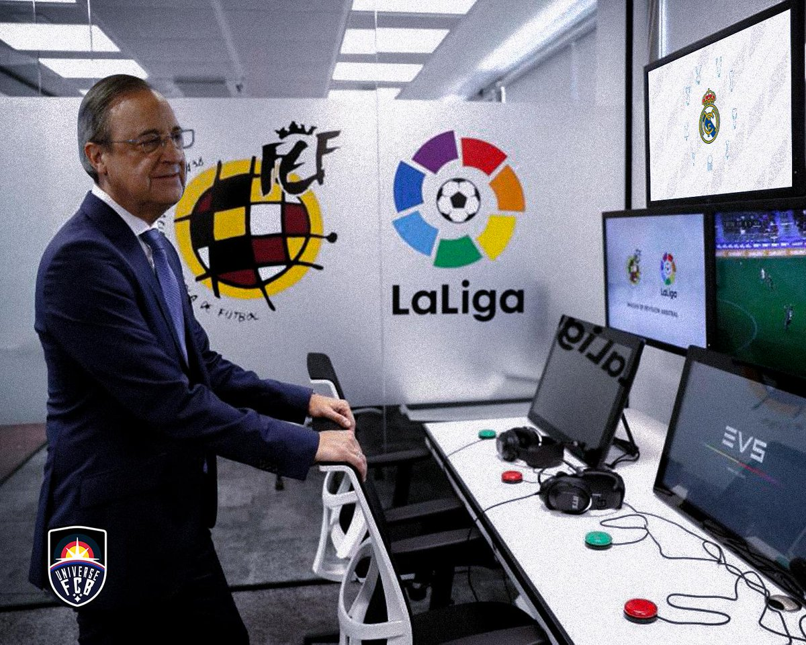

rprjose
Fuego
Agua
Subnautico
rprjose és un Youtuber de tipus Foc i Volador, amb habilitats subnautiques, i controlador de l’aigua. Escup foc que pot fondre qualsevol cosa, i vola pel cel amb les seves ales en flames.

Rusben
Planta
Destructor
És un Pokémon força perillós. Té la paciència molt limitada i utilitza atacs de tipus planta. També és molt social, fet que pot ajudar-te a capturar altres Pokémon.